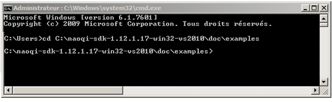

C++ SDK - Installation Guide¶
Warning
Installing C++ development tools requires to understand and master cross-compilation concepts.
Beginners should prefer Choregraphe and Python.
Supported Operating Systems¶
| OS | Version |
|---|---|
| Linux | Ubuntu 14.04 Trusty Tahr - 64bits only |
| Windows | Microsoft Windows 7 and 8.1 |
| Mac | Mac OS X 10.11 El Capitan |
Windows limitations¶
Overview¶
| Steps | comment |
|---|---|
| A - Compiler and IDE | Make sure you have the required tools. |
| B - Cross-platform build system | |
| C - qiBuild Installation | Follow step by step the installation guides |
| D - SDK Installation | |
| E - Compile and run an example |
Requirements¶
A - Compiler and IDE¶
| OS | Compiler and IDE |
|---|---|
| Linux | GCC version 4.8.2 or higher and a recent version of QtCreator. |
| Windows | Visual Studio 2010. |
| Mac | XCode, use the version corresponding to your Mac OS X (Snow Leopard or Lion), and a recent version of QtCreator. |
On Mac and Linux you can also use Eclipse if you are used to it.
B - Cross-platform build system¶
Additionally to the C++ SDK, you will have to install qiBuild, a tool designed to generate cross-platform projects using CMake.
CMake generates makefiles and workspaces for any operating system, making the project able to be compiled simply on Windows, Mac, Linux and NAOqi OS.
The table below lists the prerequisites to qiBuild installation.
| Requirement | Comments |
|---|---|
| CMake | On Linux: Use the cmake package provided by your distribution. Make sure to use version 2.8.12 or higher. On Windows and Mac: Make sure to use version 3.2 or higher.
|
| Python 2.7 | On Windows: To use scripts written in Python, you have to put in your |
C - qiBuild Installation¶
| Step | Action |
|---|---|
Checking qiBuild prerequisites Make sure you have installed CMake and Python. For further details, see B - Cross-platform build system. |
|
Installing qiBuild Follow the Installation step of the: qiBuild documentation - Getting started, and only this step, then come back to this page. |
|
Configuring qiBuild Run: $ qibuild config --wizard
You will be prompted to specify:
It is advised to use ‘Unix Makefiles’ on Linux and Mac, and ‘Visual Studio’ on Windows. Note that you can still re-run the config wizard anytime you want. Result: a file is generated in |
D - SDK Installation¶
| Step | Action |
|---|---|
Checking SDK prerequisites Make sure you have installed one of the recommended compilers and IDE. For further details, see A - Compiler and IDE. |
|
Retrieving C++ SDK Retrieve the C++ SDK archive:
You can download the latest release from Aldebaran Community website. For further details, see: Downloading & Installing Aldebaran Software. Be careful to select the archive corresponding to your Operating System (Windows, Mac or Linux). |
|
| Extract it on your machine (we’ll assume that the extracted folder is called naoqi-sdk). | |
Create an EMPTY folder where you want to store your C++ SDK (let’s call it /path/to/SDKfolder). Open a Command Prompt and go to that folder. Type this command in order to create a worktree. $ qibuild init
|
|
Then copy your folder naoqi-sdk into your SDK folder. You should then have something like: /path/to/SDKfolder/naoqi-sdk |
E - Compile and run an example¶
| Step | Action |
|---|---|
In your SDK folder, enter the subfolder doc/dev/cpp/examples using your Command Prompt. $ cd /path/to/SDKfolder/naoqi-sdk/doc/dev/cpp/examples
For example, Windows users will do (for C++ SDK):  |
|
Type this command in order to create a toolchain using the feed from the C++ SDK: $ qitoolchain create mytoolchain /path/to/SDKfolder/naoqi-sdk/toolchain.xml
Where mytoolchain is the name you want to give to this specific toolchain (you could have several). |
|
Type this command to create a build configuration associated with this toolchain, and make sure this configuration is the default for this worktree: $ qibuild add-config mytoolchain -t mytoolchain --default
|
|
Type these commands in order to configure and build the sayhelloworld project: $ cd core/sayhelloworld
$ qibuild configure
$ qibuild make
|
|
You can now run the resulting binary from: sayhelloworld/build-mytoolchain/sdk/bin Note On Mac, you should set the environment variable |
{kind=link}